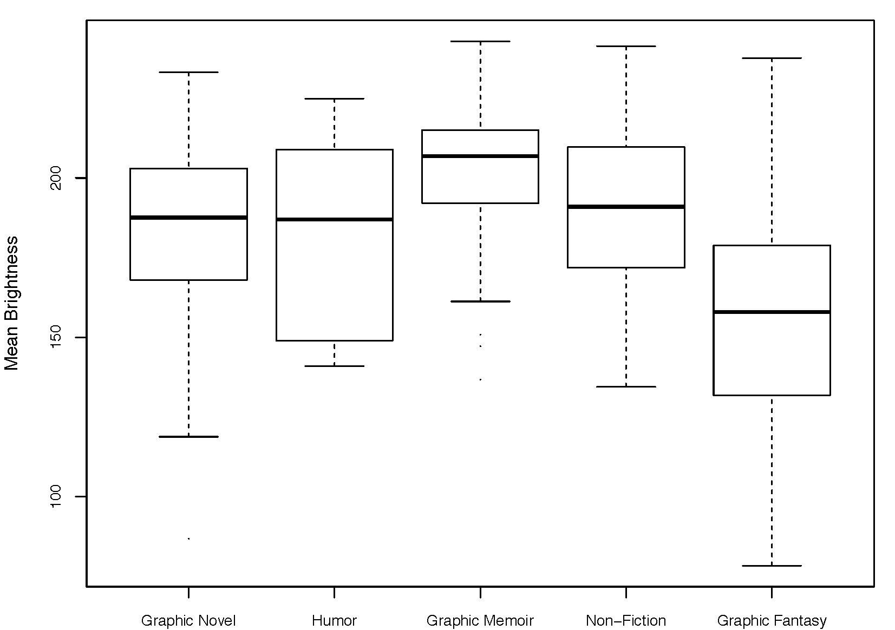
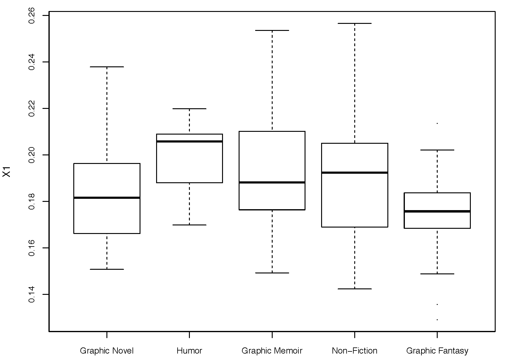
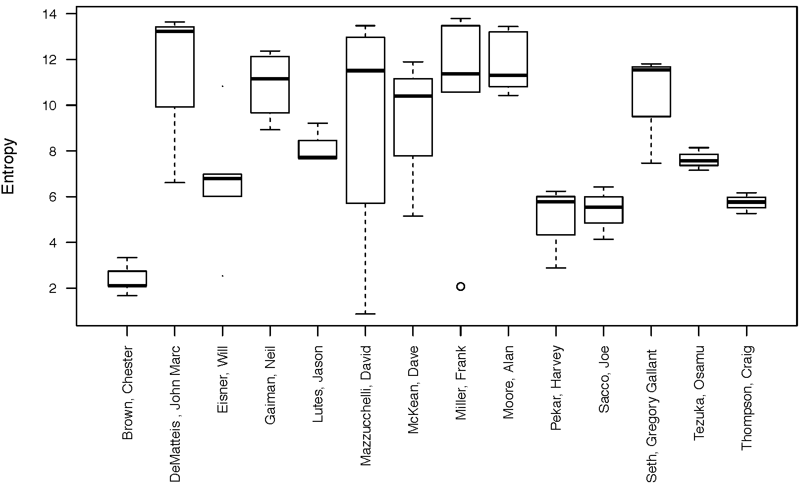
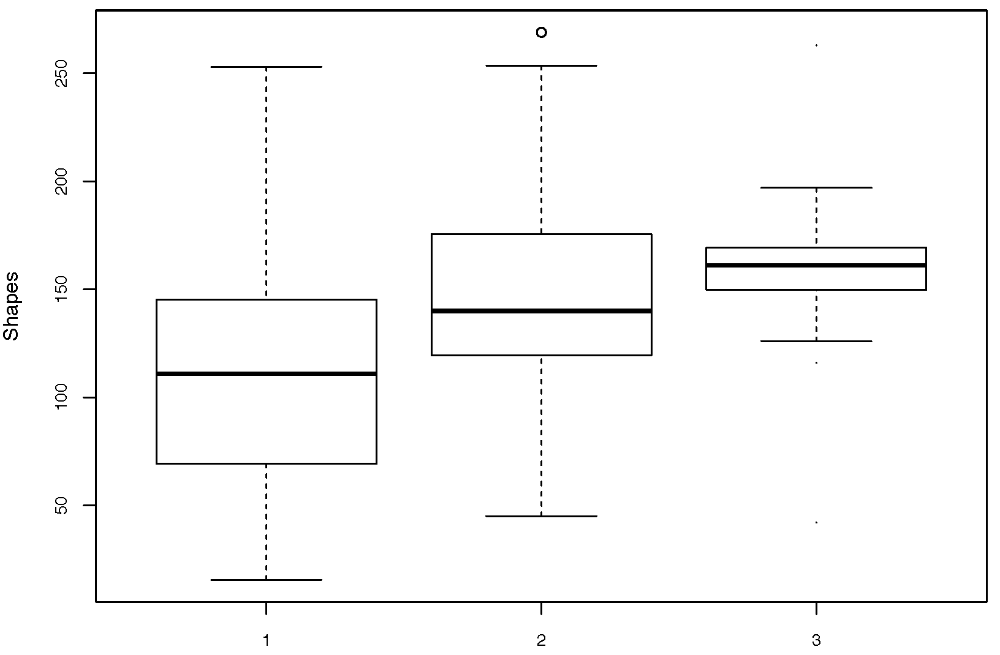

Stylometry has a long tradition in linguistics and literary studies and has only gained in popularity with the digitization of text corpora and out-of-the-box tools (Holmes and Calle-Martin & Miranda-García). Stilometric methods for paintings have been advanced in digital art history but remain at an early stage of development (Qu, Taeb & Hughes; Manovich). Stylometric analyses for visual narratives are not yet established. 1 Visual narratives include film and TV, comics and other illustrated print literature, and to an extent computer games, constituting some of the most popular cultural formats of the twentieth and twenty-first centuries. The relative lack of research in this area may be traced to the technical hurdles of image analysis and the absence of suitable corpora. This paper will introduce a method for visual stylometry in comics based on the analysis of a corpus of 209 book-length graphic narratives. In closing, we explore how the method may be applied to other media.
Our analysis is based on the Graphic Narrative Corpus (GNC), the first representative collection of what is commonly called graphic novels (Dunst et al.). The GNC was conceived as a stratified monitor corpus and defines graphic narratives as comics of more than 64 pages in length that tell one continuous or closely-related stories and are aimed at an adult readership. Due to the absence of reliable bibliographies, the total population remains unknown. A random sample is therefore not feasible. To avoid bias, we sampled from a wide array of sources: academic and general audience databases, library collections, international comics prizes, Amazon.com bestseller lists, literary histories, surveys of comics scholars, and media reports. At the time of analysis in November 2017, 209 full-length graphic narratives running to nearly 50.000 pages had been digitized and checked for scanning artefacts.
The focus on image analysis is due to both methodological and practical reasons: stylometric methods for text analysis are more established and are being continuously improved by an existing research community. These methods can be directly applied, or easily adapted, for analyzing text in comics. Automatic text localization and OCR for comics still represent work in progress, and text can not yet be extracted automatically with sufficient quality. This leaves time-consuming manual annotation as the only option, which excludes the analysis of large corpora. Visual style thus represents the most promising avenue for distinguishing between authors and genres. We used five basic measures for analysis, all of which are low-level features that are commonly used in computer vision and information theory. In all these cases, we were interested in finding significant relationships between these measures as indicators of visual style and the critical concepts we are investigating, i.e. genre and authorship.
After calculating the five basic measures, we derived the median for each of the 209 graphic narratives. To analyze stylistic variation within individual narratives, we calculated standard deviation from each of the five measures. We performed Anova and Tukey’s HSD, which are standard statistical methods for testing for significant differences among the means of more than two samples, with p<0.05.
The GNC consists of fictional and non-fictional texts, including graphic memoirs and journalism, which are often summarized under the somewhat misleading umbrella term graphic novel. We assigned 23 subgenre categories using plot summaries and information provided by publishers. Their distribution can be seen in figure 1. Subgenres were grouped into six larger categories for analysis: graphic novel, graphic memoir, other non-fiction, humor, graphic fantasy, and miscellaneous.
Figure 1: Larger genre categories are indicated by color ranges: graphic novel (red), graphic memoir (green), other non-fiction (blue), humor (yellow), graphic fantasy (purple), and miscellaneous (gray).
Results show highly significant distinctions for graphic novel, graphic memoir, and graphic fantasy across several measures. Graphic memoirs (including such canonical text as Spiegelman’s Maus and Bechdel’s Fun Home) are brighter, show less color variation (cb & cr), and are more regular in their visual style than other genres. Regularity of visual style can be seen in the lowest median scores for entropy and the high frequency of horizontal edges. Graphic fantasy is significantly darker, while showing the highest entropy and lowest number of horizontal edges. Graphic fantasy also distinguishes itself by the highest amount of color variation. Graphic novels are situated between the two extremes of graphic memoirs and fantasy, yet are statistically distinct in their visual style. The measure number of shapes did not return significant results, while the edge histogram only did so for horizontal edges. The boxplots in figures 2-4 show results for entropy, brightness, and horizontal edges.
Figure 2: Boxplot Entropy: Graphic Fantasy – Graphic Memoir (p<0.003)
 Figure 3: Boxplot Mean Brightness: Graphic Memoir – Graphic Novel (p<0.016); Graphic Fantasy – Graphic Novel (p<0.000)
 Figure 4: Boxplot Horizontal Edges: Graphic Fantasy – Graphic Memoir (p<0.001)
The GNC includes several authors that are represented with more than one graphic narrative. The GNC also contains information on single authorship, or collaborations between one writer and one illustrator, or multiple authors. Results returned highly significant distinctions for individual authors and for authorship categories (single, two, and multiple authors). Works by authors such as Neil Gaiman and Frank Miller show consistently higher entropy and a comparatively higher mean brightness than other authors, while the opposite holds for Will Eisner, for instance. Results align with genres in which these authors publish, respectively, graphic fantasy versus graphic novel and memoir. Similarly, the number of shapes and the variation in mean brightness are significantly lower for authors who publish in the latter genres. Individual and multiple authorship also results in distinct visual styles. Graphic narratives written by a single author show lower entropy and number of shapes, are brighter and less colorful, and contain fewer diagonal edges (45° and 135°). Results were highly significant, with p<0.01 throughout. Figure 5 and 6 visualize entropy for individual authors and number of shapes for authorship categories.
 Figure 5: Boxplot Entropy Authors with >3 titles
 Figure 6: Boxplot Number of Shapes for Authorship Categories: 1 – 2 Authors (p<0.001); 1 – >3 Authors (p<0.001)
We introduced image analyses that adapt stylometric distinctions to visual narrative. As our paper shows, comics grouped together under authorship or genre affiliation share numerous visual traits. The correlation between author and genre categories indicates that we need to disentangle these signals. We are working on neutralizing the author signal by penalizing texts from the same writer and will integrate this approach in time for DH 2018 (Tello et al.). As examples of hand-drawn still images, comics have stylistic traits that distinguish them from moving image narratives such as film and TV. Thus, the visual descriptors used here may be adapted most readily to other forms of graphic art, including drawings, woodcuts, and lithographs. Given that the measures we used are highly generic and low-level features, the method also has potential for other media in which the concepts of genre and authorship play a role. Thus, they could be adapted for investigating authorship in film, for instance.
Lev Manovich applied stylistic description to manga but his studies remained explorative and did not offer an analysis of categories such as author or genre.